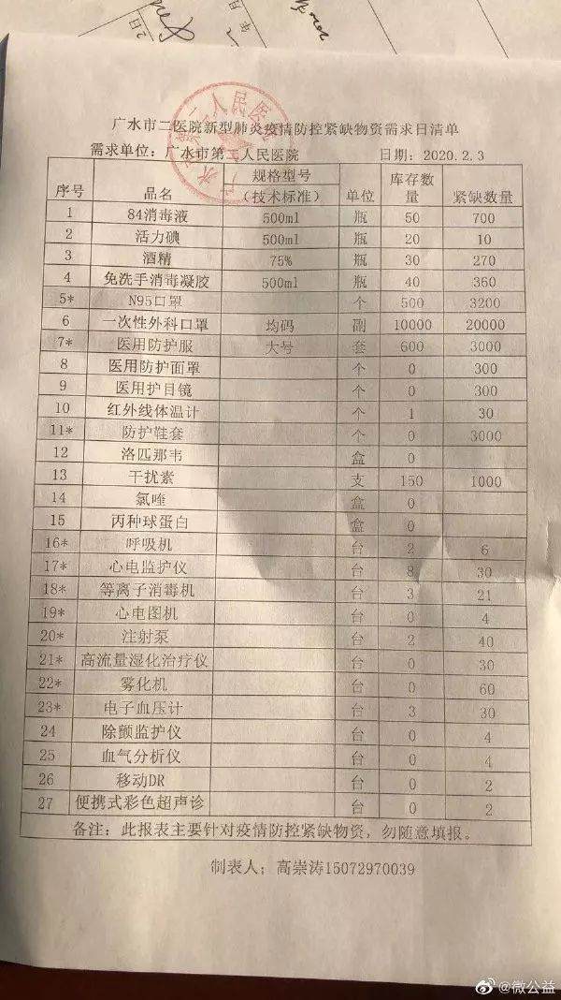

封城后的湖北荆州：医用级防护物资存量告急–专题-中国经营网
原文链接 备份链接 封城后的湖北荆州：医用级防护物资存量告急 2020-02-03 19:36 作者：邹黄晶 张玉 来源：中国经营网 特约撰稿 邹黄晶 本报记者 张玉 荆州、上海报道 “我们已经想尽了一切办法，目前最缺的还是医用级口罩、防 …
作者 | 江山
编辑 | 张国
2月5日，中国青年报·中国青年网记者看到的一份湖北省广水市二医院紧缺物资需求清单显示，该院医用防护面罩、医用护目镜、防护鞋套等许多物品的库存数量都是“0”。广水市是随州市下辖的县级市之一。
广水市二医院后勤物资保障负责人向记者确认，这是广水新冠肺炎疫情防控两家定点医院之一，需求清单里的情况是真实的。“我们只能把用过的护目镜、面罩消毒重复使用，鞋套自己找人加工。一次性手部消毒液到处买不到，只能用酒精自制。”
他告诉记者，广水二医院共有100多名医护人员，医用物资“都是东拼西凑”，没有N95口罩等急用的必需品。

图自网络
连日来，来自湖北省随州市的医院求助信息在社交平台传播。2月5日下午，中国青年报·中国青年网记者从随州市新冠肺炎疫情防控指挥部和随州市中心医院等渠道了解到，目前随州已收到部分捐赠，但因为物流原因，医用防护物资仍处于紧缺状态。
截至2月4日24时，湖北省累计报告新型冠状病毒感染的肺炎病例16678例，其中随州706例。随州市的常住人口为220多万，与其他城市相比，确诊病例占比处于高位。
2月3日，随州市唯一的三甲医院——随州市中心医院发布接受社会捐赠的公告，列出的紧缺防护物资耗材清单有“医用外科口罩、N95口罩、一次性医用口罩、医用防护服、隔离衣、一次性手术衣、防护面罩、防冲击眼罩、医用鞋套等”。

图自网络
随州市疫情防控指挥部工作人员告诉记者，当地已陆续收到社会捐赠的款物。2月4日起，随州市在城区禁行私家车、网约车、出租车，“为了尽量把大家都隔离在家里”。指挥部另一位参与物资保障工作的工作人员告诉记者，随州市已向湖北省委、省政府报告，2月5日，湖北省委副书记、省长王晓东已到随州协调解决问题。
在网上发布的众多求助信息中，其中一则称，“随州的经济发展水平在全省比较落后，医疗资源匮乏，只有随州市中心医院一家三甲医院。随州仅有内蒙古一支4人医疗队增援……急需医疗队、物资支援和政策帮扶。”
随州市疫情防控指挥部工作人员介绍，截至2月5日，当地确实只有一支来自内蒙古的4人医疗队前来支援。这支医疗队于1月31日到达随州。随州市前几日感染者数量迅速增加，一个原因是外来专家来了比较先进的仪器，检测出了许多疑似患者，目前新增确诊病例人数已在逐渐下降，2月4日新增65例确诊病例，较前一天新增的183例已有下降。
随州市中心医院办公室一名工作人员告诉记者，目前该院最短缺的是防护服、口罩和护目镜，特别是防护服。为了节约防护服，医生和护士连续上一天班而不更换，只能穿成人纸尿裤以解决内急。
她介绍，求助信息发布后，该院陆续收到一些捐赠物资，物资紧缺状况得到一定缓解，但其中许多不符合医疗标准，“有很多（口罩）都是一次性的，他们（医护人员）都用不了”。
她告诉记者， 随州市中心医院“把所有的医护人员全部都调动起来了，从大年三十起就没休息，许多后勤人员也去一线了”。
在物资供应上，一个实际困难是物流不畅。随州市中心医院这位工作人员告诉记者，前几日只有顺丰和中国邮政两家物流公司提供服务，近两日顺丰也停运了。该院负责后勤物资的另一位工作人员介绍：“我们也在努力地给供货厂商做工作，因为有好多物资从运输上面有困难，沟通好了他不一定能进来”。
顺丰速运客服表示，目前寄往随州的快件限重3公斤，因陆路交通已停运，只能走航运。
此外，有在随州市基层医院联系物资采购的知情人士介绍，随州下辖县级市的医护人员和医疗物资也面临缺口，除了口罩、防护服、护目镜这类物资，在疫情防控工作中常用的红外体温检测仪也不足。
据湖北当地媒体报道，2月5日，湖北省委副书记、省长王晓东在随州市、孝感市检查指导疫情防控工作。针对基层反映的医疗技术力量不足、医疗物资缺口较大等问题，王晓东现场调度有关部门立即解决，并叮嘱要科学合理调配使用，确保把有限资源用在刀刃上，努力提高收治率和治愈率、降低感染率和病死率。
（本文由中国青年报独立出品，首发在中国青年报客户端及头条号，加入树木计划。）
中国青年报·中青在线出品
微信编辑 | 陈轶男

觉得好看请点这里
原文链接 备份链接 封城后的湖北荆州：医用级防护物资存量告急 2020-02-03 19:36 作者：邹黄晶 张玉 来源：中国经营网 特约撰稿 邹黄晶 本报记者 张玉 荆州、上海报道 “我们已经想尽了一切办法，目前最缺的还是医用级口罩、防 …
原文链接 备份链接 31.01.2020本文字数：1420，阅读时长大约2分钟 导读：医院现在依然是防护物资紧缺，特别是一些普通科（病）室。 作者 | 第一财经 吴绵强 “最近科室有确诊（新型冠状病毒感染的肺炎）的病例了，我们才开始穿防 …
原文链接 备份链接 今天，湖北省武汉市红十字会向武汉市中心医院提供了医用外科口罩4000个、医用防护服600套；向武汉市洪山区中医医院提供了医用防护服400套，84消毒液10箱，医用口罩5箱。武汉红十字会表示，接收的所有物资都将被送往一线 …
原文链接 备份链接 按规定，他们每接一次病人，都要全车消毒、销毁防护服，不然可能会成为新的传染源。但现实情况是，他们全站连一套防护服都没了。除夕夜里两点，他没有睡觉，发了这半年里唯一一条不是关于女儿的朋友圈，是一条物资的求助。他告诉《人 …
原文链接 备份链接 记者 | 驳静 董冀宁 实习记者 | 李秀莉 昨天下午，“湖北之声”发布《武汉紧急求援》，指出多家医院物资紧张，可能只够维持3-5天。本刊记者接触到的一线医护人员也反应了同样的情况。“为什么我们显得这么着急呢？病毒肆 …